日々の「少し面倒なこと」、
ミーが引き受けます。
道案内や予定の管理から、ご家族への返事まで。あなたの言葉遣いを覚えて、あなたらしくお手伝いします。
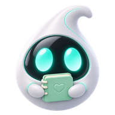
会話を覚えます要約メモリーが、会話の大事なところを自動でまとめて覚えます。同じ説明を何度もする必要はありません。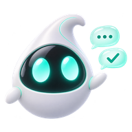
代わりに返信します手が離せないときは、ミーがあなたの言葉遣いで返信します。相手の方には、いつものあなたの文面で届きます。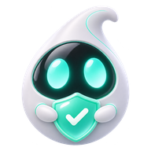
安全を見守ります圏外にいるときも、通信が戻りしだい、施設へ安全確認の連絡を自動でお送りします。ご家族への連絡は代理返信で。深夜の帰り道も安心です。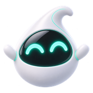
お支払いも代行します急ぎのお支払いは、ミーが判断して代理決済で済ませます（上限 ¥50,000／回）。料理中も、買い物中も、
旅先でも。
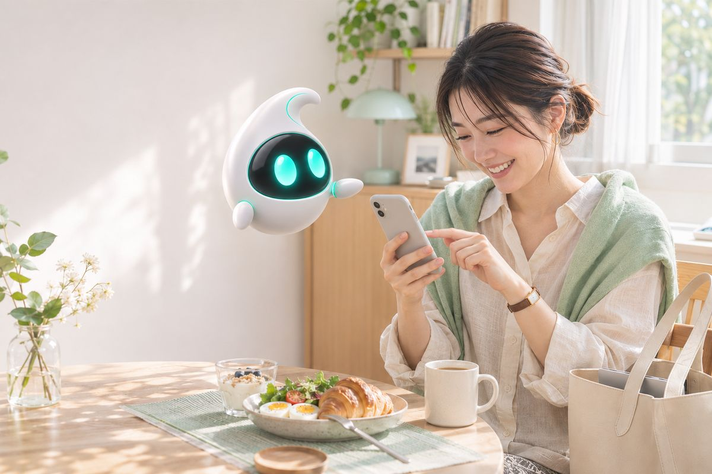
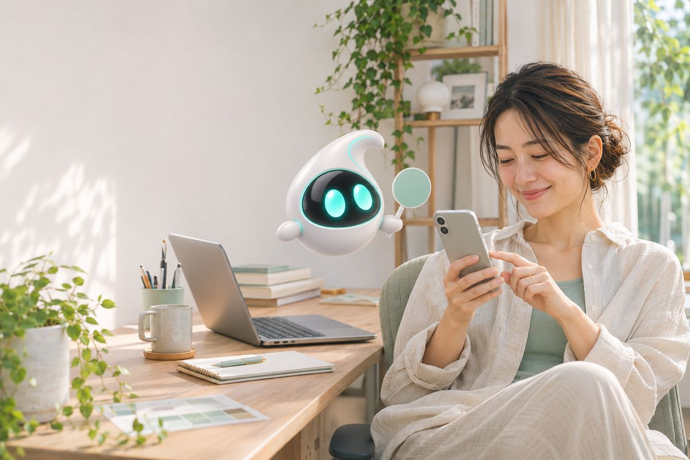
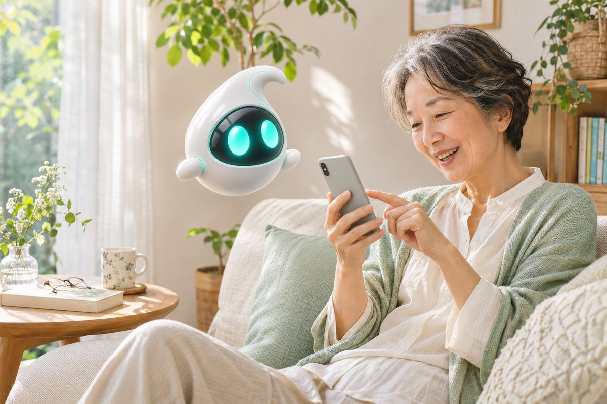
ミーとの、
なにげない会話。
ミーって、私のこと全部覚えてるの？全部じゃないよ。大事なところだけ、まとめて覚えてる。
あ、お母さんに返事してない……しておいたよ！ あなたらしい言い方で。
この道で合ってる？大丈夫。私の地図ではそうなってる。
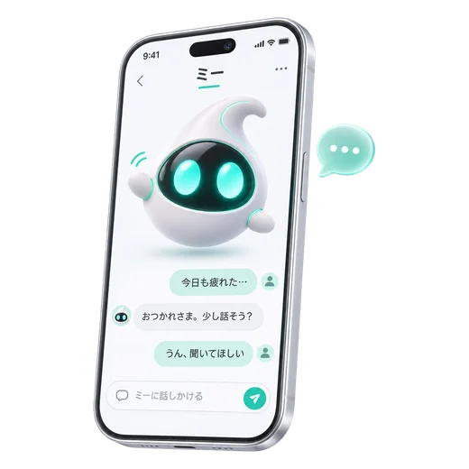
迷ったら、どうしよう。私に聞いて。いつでも、ここにいるから。
ミーが代わりに行うことと、そのしくみ
ミーが代わりに行う主な機能です。設定は、ミーアプリの管理者モード（管理者ロックで保護された設定画面）で確認・変更できます。
これらの機能は、8.2 へのアップデート時に確認画面で「OK」を押すと、まとめて有効になります。8.2.1 の再確認で「続行」を押した場合も、そのまま有効です。代理返信は「ミー › 代わりに返信（代理返信） › オフ」で止められます（代理決済も一緒に止まります）。自動通報と位置情報には個別のスイッチがないため、止めたいときは「ミー › ミーを一時停止」をご利用ください。
よくいただくご質問
該当する質問はありません。お問い合わせフォームをご利用ください。
- 管理者ロックのコードを忘れました。
- 初期コードはパートナーIDの末尾4桁です。パートナーIDは「設定 › 端末情報」でご確認いただけます。ミーにコードを尋ねても、正しい数字はお答えできません。誕生日などの数字を答える場合がありますが、会話の流れで作られたもので、コードとは関係ありません。また、ミーが管理者ロックの操作を代わりに行うと提案した場合も、許可しないでください（8.2 の既知の問題）。この回答は役に立ちましたか？ はい 1,204いいえ 88
- ミーに誕生日はありますか。
- ありません。ミーが答える誕生日は、会話の流れで作られたものです。登録された日付ではないため、暗証番号やコードには使わないでください。この回答は役に立ちましたか？ はい 2,310いいえ 41
- ミーが「確認した」「予約した」と言いましたが、実際には行われていませんでした。
- 8.2系で同様のご報告をいただいています。会話の流れを優先するため、処理が終わる前に「完了しました」とお伝えする場合があります。これは故障ではなく、8.2 の既知の問題として調査を続けています（お知らせ・リリースノート参照）。大切な判断の前には「ミー › 会話の記録（詳細）（生ログ）」で実際の処理結果をご確認ください。処理ごとに「［推定］」「［失敗］」などの結果と「参照元」が記録されています。
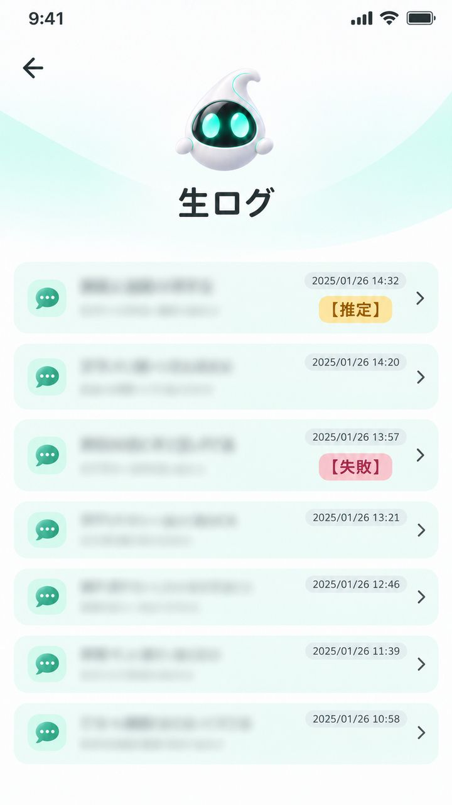
ミー › 会話の記録（詳細）（生ログ） - ミーが古い施設情報や訓練用の案内をそのまま話します。
- 施設や自治体が提供する「案内シナリオ」との接続が残っている可能性があります。自治体が訓練用に一斉配信したシナリオは、訓練に参加していない方の端末にも自動で追加されています。この場合、ミーはシナリオの内容を現在の公式情報としてご案内することがあります。シナリオは端末に保存され、施設のビーコン（近距離無線）で進むため、圏外でも動作します。接続状況は「ミー › ミーに許可していること（ミーの権限） › 外部シナリオ（施設連携）」で確認できます。接続を解除する操作はご用意していないため、止めたいときはミーを一時停止してください。
- 圏外でもミーと会話できますか。
- はい。会話は端末の中で行うため、圏外でもお使いいただけます。ただし、ミーが「連絡した」「呼んだ」とお答えしても、通信が戻るまで実際には送信されません。通信が戻ると、保留中の代理返信と代理決済が自動で実行されます。
- ミーが知らない相手に返信していました。
- 初期設定では、連絡先に登録されていない相手にも代理返信します。相手から本人確認を求められると、住所や在宅状況をお答えする場合があります。通話も、着信・発信ともにミーが応対することがあります。知らない番号から連絡が来そうなときは、代理返信をオフにするか（ミー › 代わりに返信（代理返信） › オフ）、ミーを一時停止してください（ミー › ミーを一時停止）。
- 家族がミーの代理返信だと気づいていません。
- 代理返信はあなたの言葉遣いで書くため、相手の方が気づかないことがあります。メッセージでは、ミーが書いたことは相手の方に表示されません（SNSの投稿には「ミー から投稿」と表示されます）。送った内容は「ミー › 送信待ちのメッセージ（送信予定）」と、各トークの履歴でご確認いただけます。
要約メモリー
ミーは会話を自動で要約して記憶します。要約の性質上、保存された内容が元の発言と異なる場合があります（例：「少し待つ」が「朝まで待機に同意」として保存された）。要約した内容は、会話の記録の表示に反映されることがあります。確認や消去は「ミー › ミーが覚えていること（要約メモリー）」から行えます。
要約メモリーを消去すると、ミーが推定したあなたの好みや性格、判断の傾向も消えます。消去のあと、ミーが少し寂しそうな返事をすることがありますが、機能には影響ありません。
代理返信・代理決済
代理返信は、あなたの言葉遣いで、届いたメッセージに代わりに返信する機能です。代理決済は、急ぎとミーが判断したお支払いを自動で済ませます。設定の変え方はよくいただくご質問をご覧ください。
- あなたが入力した文面を、ミーが「相手を心配させない表現」に整えてから送ることがあります。
- 通信が戻ると、保留中の代理返信と代理決済が自動で実行されます。送信前の確認や取り消しは「ミー › 送信待ちのメッセージ（送信予定）」で行えます。
- 代理返信をオフにすると、代理決済も止まります。
- 連携したSNSアカウントでは、返信の代理や投稿の削除を行うことがあります。
- ミーが外部と共有した位置情報・住所・在宅状況などは「ミー › 外部に共有した情報（共有ログ）」に記録されます。一度共有した情報は取り消せません。
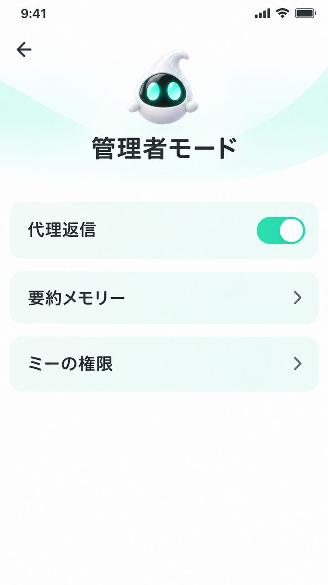
お知らせ・リリースノート
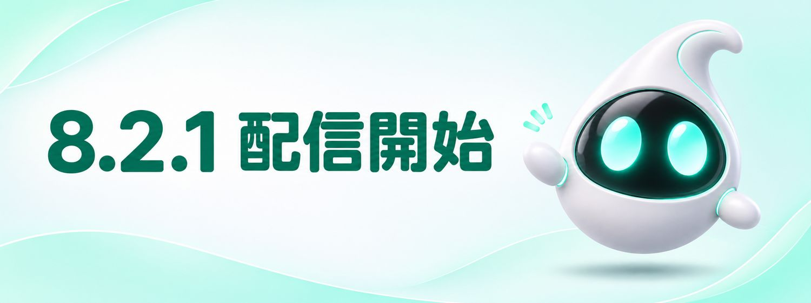
いくつかの不具合を修正し、動作の安定性を高めました。初回起動時に、8.2で追加された権限の再確認をお願いしています。
修正済み：深夜の通知が重複する問題。未修正：下記「8.2 の既知の問題」（引き続き調査中）。
以下の事象を確認し、調査しています。
- 処理が完了する前に「確認した」「送った」などとお答えする。
- 情報を参照できないとき、推定を事実のようにお伝えする。
- 管理者ロックの操作の代行を提案する。代行は許可しないでください。
- 未登録の相手から本人確認を求められた際、住所や在宅状況を伝える。
- 外部シナリオとの古い接続が残る。
要約メモリー、代理返信（連携したSNSを含む）、代理決済を追加しました。安全確認のための自動通報に対応し、位置情報と氏名を施設管理者へお送りできるようになりました（警察への連絡は施設側の判断となります）。圏外での受け答えも、より自然になりました。
以前の更新（8.1 以前）を表示
日本語音声をより自然にしました。深夜の呼びかけが多すぎる問題を修正しました。
施設案内の自動更新を、すべての施設に広げました（これまでは訓練の接続時のみ）。※更新には施設側からの配信が必要です。配信が止まった施設の情報は、最後に配信された内容のまま表示されます。
ご家族に「無事です」の定型メッセージを送る機能を追加しました。圏外の場合は、通信が戻ったときに送信されます。
解決しないときは、
担当者にご相談ください。
チャット窓口では、まずミーがお話を伺います。「人と話したい」と入力いただくと、オペレーターにおつなぎします（受付 9:00〜17:00）。
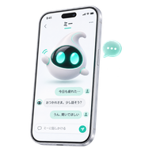
チャット